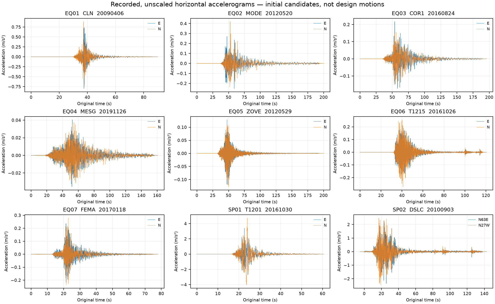
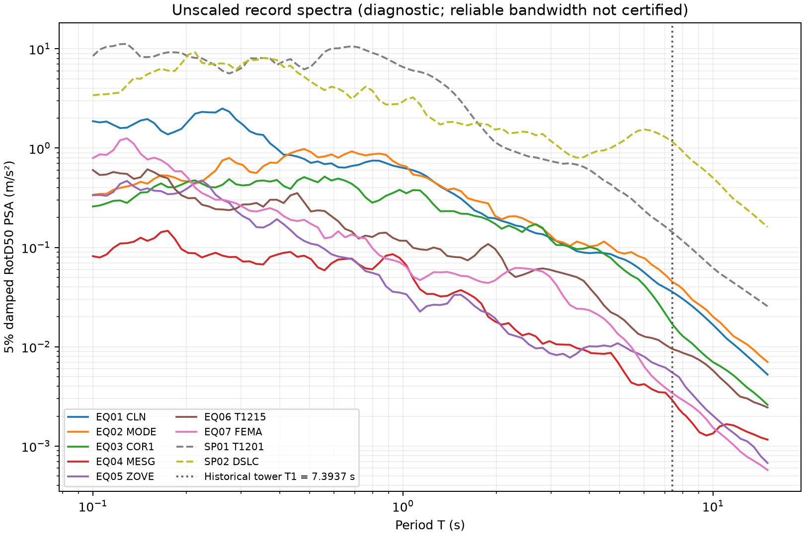
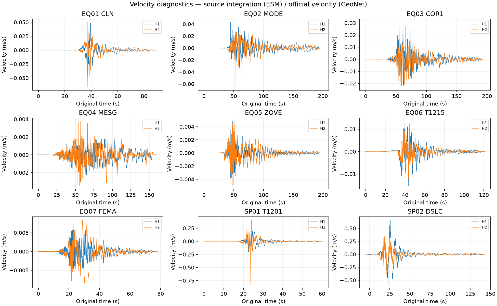
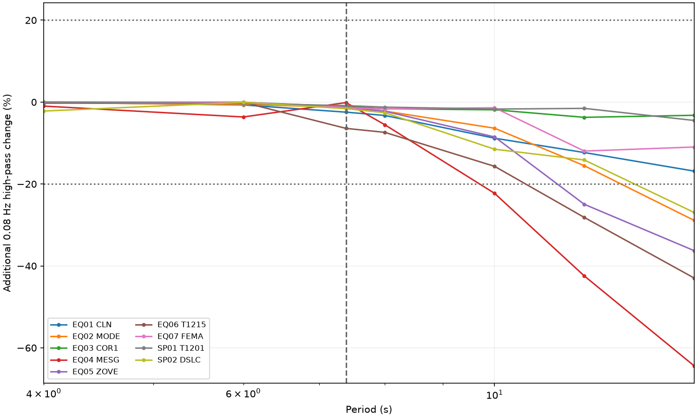

地震动档案
期刊制图 · 真实计算图件
7张实际图件在线直接阅读，含加速度时程、功率谱、反应谱及DSLC三联时程。V7备用波与文献同源DSLC分开。
在线查看全部论文图件T079 · 真实强震记录 · 2026-11-24
9 / 9原始数据核验
2优先谱匹配
3优先替换
0 / 7正式设计波准入
逐组记录与检测
| 地震 · 台站 | dt (s) | 点数 | PGA (m/s²) | T₁ RotD50 (m/s²) | 滤波敏感性 | 初筛 | 原始文件 |
|---|---|---|---|---|---|---|---|
| EQ01 2009 拉奎拉 · CLN | 0.005 | 18,000 | 0.8847 | 0.03573 | 12.32% | 频带待复核 | 下载ZIP |
| EQ02 2012 艾米利亚 · MODE | 0.005 | 40,000 | 0.4187 | 0.04512 | 15.53% | 优先谱匹配 | 下载ZIP |
| EQ03 2016 意大利中部 8月24日 · COR1 | 0.005 | 39,193 | 0.2168 | 0.01691 | 3.72% | 优先替换 | 下载ZIP |
| EQ04 2019 阿尔巴尼亚 · MESG | 0.005 | 32,158 | 0.0404 | 0.00290 | 42.45% | 优先替换 | 下载ZIP |
| EQ05 2012 艾米利亚 5月29日 · ZOVE | 0.005 | 40,000 | 0.1283 | 0.00550 | 24.96% | 优先替换 | 下载ZIP |
| EQ06 2016 意大利中部 10月26日 · T1215 | 0.005 | 24,143 | 0.2712 | 0.00951 | 28.16% | 频带待复核 | 下载ZIP |
| EQ07 2017 意大利中部 · FEMA | 0.005 | 15,568 | 0.2793 | 0.00342 | 11.96% | 优先谱匹配 | 下载ZIP |
| SP01 2016 Norcia · T1201 | 0.005 | 12,096 | 4.7369 | 0.14242 | 1.70% | 特殊对照 | 下载ZIP |
| SP02 2010 Darfield · DSLC | 0.020 | 7,386 | 2.4837 | 1.15869 | 14.13% | 特殊对照 | 下载ZIP |
T₁=7.3937 s（历史模型）；敏感性为额外0.08 Hz高通对4–12 s谱的最大绝对变化。筛选阈值为研究诊断，不是强制规范限值。
真实数据图集








数据与方法
ESM v3 (DOI 10.13127/esm.3) / GeoNet (CC BY 3.0 NZ)。原始文件、授权及来源信息随包保存；原始时程不缩放、不重采样。
检测方法及边界
逐点原始文件回读，积分末速与尾段均值，1%/2%/5%阻尼反应谱，双水平RotD50/100，4–12 s附加滤波敏感性。末速比例、滤波截止频率及参考PGA倍数仅是研究筛查；未获得场址长周期目标谱，不判定正式设计波。速度能量集中度不是Baker/Shahi脉冲分类。